기계설계산업기사 (2004-05-23 기출문제)
1과목: 기계가공법 및 안전관리
1. 아래 그림과 같이 ℓ= 3 m의 외팔보의 전길이에 2 kN/m의 등분포하중과 자유단에서 2m의 곳에 4kN의 집중하중을 받을 때, 고정단에 생기는 최대굽힘 모멘트는?
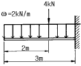
- 70 Nㆍm
- 15 kNㆍm
- 150 Nㆍm
- 13 kNㆍm
(정답률: 20%)

2. 정사각형 단면의 봉에 25kN의 인장하중을 가하여 40MPa의 응력을 생기게 하려면 봉의 한 변의 길이는 몇 mm인가?
- 25
- 30
- 35
- 40
(정답률: 38%)
3. 그림과 같은 T형 도형의 도심 위치
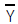
는? (단, 치수의 단위는 ㎝이다.)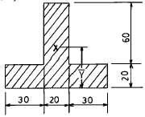
 = 26.33
= 26.33 = 27.14
= 27.14 = 28.21
= 28.21 = 30.01
= 30.01
(정답률: 24%)
4. 그림과 같은 하중을 받고 있는 단순보에서 A지점의 반력 RA 는 얼마인가?
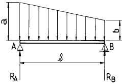
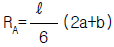
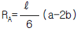
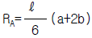
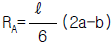
(정답률: 35%)
5. 길이 ℓ 인 외팔보(cantilever beam)의 자유단에 우력 M0 = Pa를 작용시킬 때 자유단의 처짐각과 처짐을 구하면?
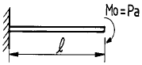
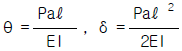
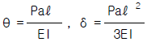
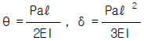
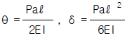
(정답률: 30%)
6. 다음 설명 중 틀린 것은?
- 포와송의 비는 가로 변형율을 세로 변형율로 나눈값이다.
- 전단탄성계수는 전단응력을 전단변형율로 나눈값이다
- 안전율은 극한강도를 허용응력으로 나눈값이다.
- 열응력은 변형율을 탄성계수로 나눈값이다.
(정답률: 54%)
7. 지름 d=5cm인 도형의 단면 2차모멘트의 값은?
- 15.34 cm4
- 20.34 cm4
- 30.68 cm4
- 40.68 cm4
(정답률: 40%)
8. 단순보에 대한 설명 중 옳지 않은 것은?
- 전단력이 변하지 않을 때는 굽힘모멘트는 직선적으로 변한다.
- 전단력이 영이 되는 단면에서 최대 굽힘모멘트가 생긴다.
- 전단력이 직선적으로 증가할 때 굽힘모멘트는 곡선적으로 변한다.
- 전단력이 최대인 단면에서는 굽힘모멘트는 최소로 된다.
(정답률: 21%)
9. 중실축과 중공축에서 크기가 같은 전단응력과 토크가 작용할 때, 중공축 외경 d2 는 중실축경 d의 몇 배나 되겠는가?(단, 중공축 내외경의 비는 d2 = 2d1이다.)
- 2.083배
- 1.77배
- 1.022배
- 1.075배
(정답률: 19%)
10. 양단이 고정된 환봉을 영하 10℃의 겨울철에 완성했다고 한다. 32℃의 여름철이 되면 이 환봉에서 발생되는 응력은 몇 MPa인가? (단, E=210GPa이며, α =1.2× 10-5/℃이다.)
- 55(인장)
- 106(인장)
- 55(압축)
- 106(압축)
(정답률: 15%)
11. 일단고정-타단힌지인 원형단면(지름=3.2cm)장주에 압축력이 작용할때 이 단면의 좌굴응력 값은 몇 MPa 인가? (단, E=210 GPa, 기둥의 길이=8m, 오일러의 공식 적용)
- 33.2
- 21
- 4.14
- 2.13
(정답률: 16%)
12. 단순 지지보 AB가 집중하중 P를 받을 때 중앙 지점의 최대 처짐량 δ 는 얼마인가?
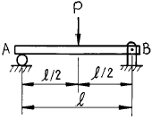
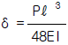
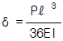
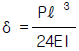
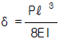
(정답률: 32%)
13. 다음은 어떤 돌출보에 대한 전단력선도이다. 굽힘모멘트 선도는?
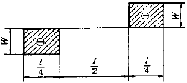
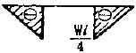
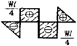
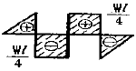
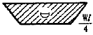
(정답률: 42%)
14. 지름 10 cm인 전동축에 3 MN.m의 굽힘모멘트와 4 MN.m의 비틀림모멘트가 작용하고 있다. 이 축에 발생하는 최대전단응력은 몇 GPa 인가?
- 20.4
- 25.5
- 30.6
- 35.7
(정답률: 28%)
15. 긴 기둥을 오일러의 식으로 설계함에 있어서 기둥의 양단을 볼트로 체결하여 양단고정으로 하면, 기둥의 양단을 핀으로 고정하여 양단 회전으로 하는 경우에 비하여 좌굴 하중을 몇배 증가시킬 수 있는가?
- 16배
- 8배
- 4배
- 2배
(정답률: 33%)
16. 외팔보의 자유단에 집중하중 P가 작용하여 자유단에 처짐량이 δ = 2 cm, 처짐각이 θ =0.02 radian일 때 보의 길이는 몇 cm 인가?
- 100
- 150
- 200
- 250
(정답률: 35%)
17. 70 Nㆍm의 비틀림모멘트를 받는 지름 70 mm의 환봉축에서 발생하는 최대전단응력은 몇 MPa인가?
- 0.1039
- 1.039
- 10.39
- 103.9
(정답률: 44%)
18. 단면2차모멘트가 100cm4이고, 외경이 10mm인 전선을 지름 1 m인 롤에 감으려고 할 경우 필요한 굽힘모멘트는 몇 Nㆍm 인가? (단, 전선의 탄성계수 E=100GPa이다.)
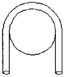
- 2×105
- 4×105
- 6×105
- 8×105
(정답률: 27%)
19. 동일 재료로 만든 같은 강도를 가진 원형단면의 보와 정사각형 단면보의 단면적 비는?
- 1 : 0.89
- 1 : 0.64
- 1 : 1.8
- 1 : 0.5
(정답률: 20%)
20. 길이 1m, 단면의 폭 10cm, 높이 20cm인 직사각형 단면의 외팔보의 자유단에 10kN의 하중이 작용한다. 고정단에서 0.5m 떨어진 지점에서의 최대굽힘응력은 몇 MPa인가?
- 5.0
- 7.5
- 10
- 12.5
(정답률: 28%)
2과목: 기계제도
21. 1인치에 나사산 4개의 리드 스크루(L나사)를 가지고 있는 선반으로서 1인치에 대하여 13산(山)의 나사를 깎으려면 변환기어를 어떻게 결정할 것인가? (단, A : 주축쪽 기어, C : 리드 스크루쪽 기어)
- A = 30, C = 20
- A = 20, C = 65
- A = 30, C = 40
- A = 20, C = 90
(정답률: 44%)
22. 전기 마이크로미터(electric micrometer)에 관한 설명 중 틀린 것은?
- 자동선별, 자동치수, 디지틀표시 등에 이용하기가 쉽다.
- 응답속도가 대단히 빠르다.
- 고속 측정이 가능하다.
- 그 치수가 합격인지 불합격인지 등의 신호를 간단히 얻을 수 없다.
(정답률: 64%)
23. 외력을 제거하면 시간과 더불어 잔류응력이 감소되는 현상을 무엇이라고 하는가?
- 시효경화
- 가공경화
- 탄성여효
- 결정성장
(정답률: 22%)
24. 열간단조에 속하는 것은?
- 업세팅(upsetting)
- 코이닝(coining)
- 스웨이징(swaging)
- 콜드 헤딩(cold heading)
(정답률: 34%)
25. 목재, 펠트, 피혁등 탄성이 있는 재료로 된 바퀴 표면에 부착시킨 미세한 연삭 입자를 사용하여 연삭 작용을 하게 하여 공작물 표면을 다듬는 가공은 무엇인가?
- 폴리싱
- 태핑
- 버니싱
- 로울러 다듬질
(정답률: 47%)
26. 테르밋 용접(thermit welding) 이란?
- 원자수소의 발열을 이용하는 방법이다.
- 전기용접과 가스용접법을 결합시킨 것이다.
- 산화철과 알루미늄의 반응열을 이용한 방법이다.
- 액체산소를 이용한 용접법의 일종이다.
(정답률: 34%)
27. 브라운 샤프형 밀링머신에서 직경 피치 12, 치수 76의 스퍼 기어를 절삭할 때, 분할판의 구멍열은 얼마인가?
- 38
- 32
- 23
- 19
(정답률: 20%)
28. 나사의 측정방법이 아닌 것은?
- 센터게이지에 의한 나사각 측정
- 피치게이지에 의한 나사피치 측정
- 3침법에 의한 유효지름 측정
- 2침법에 의한 나사외경 측정
(정답률: 43%)
29. 인발작업에서 실시하는 파텐팅(Patenting)열처리의 대상 재료로서 옳은 것은?
- 연강(C 0.⑤-0.24%)선
- 황동선
- 경강(C 0.4-0.8%) 선
- 청동선
(정답률: 34%)
30. 슈퍼 피니싱의 특징 중 맞는것은?
- 호닝, 랩핑 등과 같은면을 10초 이내의 단시간에 얻을 수 있다.
- 연삭립은 연삭 행정이 길어서 구성인선이 발생한다.
- 가공부에 고온이 발생하고, 변질층이 크게 생긴다.
- 방향성이 없는 다듬질면과 높은 정밀도를 얻을 수 있다.
(정답률: 64%)
31. 금속 아크 용접봉의 피복제 작용 중 틀린 것은?
- 아크를 안정 시킨다.
- 용착금속을 보호한다.
- 모재의 응력집중을 방지한다.
- 용착금속의 급냉을 방지한다.
(정답률: 31%)
32. 다이캐스팅(die casting)주조법에 관한 설명이다. 옳지 않은 것은?
- 용융금속을 강철로 만든 금속 주형중에서 대기압이상의 압력으로 압입하는 방법이다.
- 금속형(die)의 주성분은 Cr - Mo - V강철이다.
- 제품의 표면이 매끈하고 또한 두께가 얇아 중량을 가볍게 할 수 있다.
- 주철관(鑄鐵管), 주강관(鑄鋼管), 실린더라이너 (cylinder liner)등의 제조에 사용된다.
(정답률: 32%)
33. 브로우치 작업은 어느 경우에 유효하게 이용할 수 있는가?
- 대칭형의 윤곽을 가공할 때
- 복잡한 형상의 구멍을 가공할 때
- 나선홈을 가공할 때
- 베벨 기어를 가공할 때
(정답률: 31%)
34. 측정기 컴비네이숀 세트(combination set)로 측정할 수 없는 것은?
- 45°
- 60°
- 직각도
- 평행도
(정답률: 61%)
35. 풀림(annealing) 열처리에 관한 설명으로 적합하지 않은 것은?
- 단조, 주조, 기계 가공에서 생긴 내부응력 제거
- 열처리로 인하여 경화(硬化)된 재료의 연화(軟化)
- 가공 또는 공작에서 연화된 재료의 경화
- 일정온도에서 일정시간 가열후 비교적 느린 속도로 냉각시키는 조작
(정답률: 58%)
36. 단조프레스의 용량이 5 ton, 단조물의 유효단면적이 500㎜2 인 재료를 효율 80%로 단조할 때, 이 단조 재료의 변형저항은?
- 4 ㎏f/㎜2
- 51 ㎏f/㎜2
- 8 ㎏f/㎜2
- 10 ㎏f/㎜2
(정답률: 35%)
37. 사인 바(sine bar)로 각도를 측정할 때, 필요없는 것은?
- 블록게이지
- 마이크로미터
- 다이얼 게이지
- 정반
(정답률: 40%)
38. 항온 열처리의 요소 중 틀린 것은?
- 온도
- 시간
- 결정
- 변태
(정답률: 23%)
39. 주물사의 구비조건 중 틀린 것은?
- 적당한 강도를 가질 것
- 내화성이 클 것
- 통기성이 좋을 것
- 열전도성이 좋을 것
(정답률: 35%)
40. Wm은 주물의 중량, Sm은 주물의 비중이고, Wp는 목형의 중량, Sp는 목형의 비중이라 할 때 옳은 관계식은?
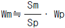
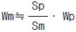
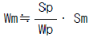
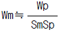
(정답률: 19%)
3과목: 기계설계 및 기계재료
41. 탄소강 중 일반적으로 용융온도가 가장 높은 것은?
- 0.1% 탄소강
- 0.3% 탄소강
- 0.8% 탄소강
- 1.7% 탄소강
(정답률: 38%)
42. 그림과 같은 단면의 축이 전달할 수 있는 비틀림 모멘트의 비 TA/TB의 값은? (단, 두 재료의 재질은 같다.)
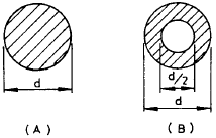
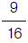
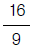
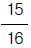
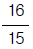
(정답률: 17%)
43. 기본 부하 용량과 동일한 베어링 하중이 작용하는 레디얼 볼베어링의 수명은 몇 회전인가?
- 103회전
- 104회전
- 105회전
- 106회전
(정답률: 25%)
44. 다음은 타이밍벨트의 특징을 쓴 것이다. 이 중 옳지 않은 것은?
- 슬립(slip)과 크리프(creep)가 거의 없다.
- 속도변화가 아주 크다.
- 굽힘 저항이 작으므로 작은 지름을 사용할 수 있다.
- 저속 및 고속에서 원활한 운전이 가능하다.
(정답률: 40%)
45. 냉간가공한 재료를 풀림처리시 나타나는 현상으로 틀린것은?
- 회복
- 재결정
- 결정립 성장
- 응고
(정답률: 55%)
46. 금형재료의 품질로 올바르지 않은 것은?
- 고온에서 내식성이 우수하여야 한다
- 열처리가 용이하여야 한다
- 고온 강도, 경도가 우수하여야 한다
- 결정입자가 커야 한다
(정답률: 72%)
47. 사각나사의 바깥지름이 26 mm 이고 피치가 6 mm, 유효지름이 22.83 mm일 때 나사의 효율은? (단, 마찰계수 μ =0.1이다)
- 30 %
- 35 %
- 40 %
- 45 %
(정답률: 16%)
48. 1200 rpm으로 2 kw를 전달 시키려고 할때 잇수 Z=20, 모듈 m=4인 평기어의 이에 걸리는 힘은 몇 ㎏f인가?
- 13
- 22
- 37
- 41
(정답률: 23%)
49. 황동에서 잔류응력에 의해서 발생하는 현상은?
- 탈아연 부식
- 고온 탈아연
- 저온 풀림경화
- 자연균열
(정답률: 38%)
50. 탄소강에 함유된 황을 제거하려면 어떤 원소를 첨가하여야 하는가?
- 니켈
- 알루미늄
- 망간
- 인
(정답률: 56%)
51. 순철에는 몇 개의 변태점이 있는가?
- 1
- 2
- 3
- 4
(정답률: 38%)
52. 스프링에 대한 설명으로 틀린 것은?
- 에너지를 저장, 방출한다.
- 탄성이 작은 재료를 주로 이용한다.
- 진동 및 충격을 흡수 완화한다.
- 금속 스프링과 비금속 스프링이 있다.
(정답률: 46%)
53. 신소재의 기계적 성질이 아닌 것은?
- 고강도성
- 내열성
- 초소성
- 제진성
(정답률: 8%)
54. 수차 프로펠라의 축의 지름이 200 mm로써 2,200 kgf의 트러스트를 받고 있다. 컬러베어링의 외경을 300 mm라 할때 몇 개의 컬러가 필요한가? (단, 최대 허용압력은 0.01 kgf/mm2이다.)
- 3개
- 4개
- 5개
- 6개
(정답률: 14%)
55. 그림과 같은 크레인용 후크에서 W = 2Ton의 하중이 작용 할경우 가장 적당한 나사는? (단, 재질의 허용응력 σ t = 5㎏f/㎜2이다.)
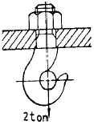
- M30
- M38
- M45
- M50
(정답률: 22%)
56. 그림과 같은 스프링 장치에서 전체 스프링 상수 K는?
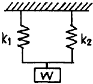
- K = K1 + K2
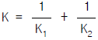
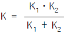
- K = K1ㆍK2
(정답률: 54%)
57. 황동의 물리적, 기계적 성질 중 옳은 것은?
- 전도도는 Zn 40%까지 증가하고 그 이상 50%에서 최소가 된다.
- 30% Zn 부근에서 연신율이 최대가 된다.
- 30% Zn 부근에서 인장강도가 최대가 된다.
- 6/4황동과 7/3황동의 비등온도는 800∼900℃이므로 주의하여야 한다.
(정답률: 19%)
58. 샤르피 충격시험에 대한 설명이다. 틀린 것은?
- 충격력에 대한 재료의 충격저항 즉 점성강도를 측정하는데 그 목적이 있다.
- 재료를 파괴할 때 재료의 인성(toughness) 또는 취성( brittleness)을 시험한다.
- Ni-Cr강의 뜨임취성, 강의 청열취성과 저온취성 등의 기계적 성질을 파악할 수 있다.
- 충격흡수에너지 단위면적당 충격치는 cm2/kg.m로 표시한다.
(정답률: 29%)
59. 코터가 스스로 빠져나오지 않으려면 자립상태(self sustenance)를 유지해야 하는데 양쪽 테이퍼 코터의 경우 자립상태를 유지하기 위한 조건으로 맞는 것은?(단,α 는 테이퍼각ρ 는 마찰각이다.)
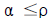
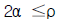
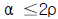
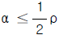
(정답률: 50%)
60. 가공용 알루미늄합금 중 항공기나 자동차몸체용 고강도 Al-Cu-Mg-Mn계의 합금명은?
- 두랄루민
- 하이드로날륨
- 라우탈
- 실루민
(정답률: 64%)
4과목: 컴퓨터응용설계
61. 512 x 512 픽셀로 구성된 래스터 스캔 디스플레이인 경우 픽셀 당 1비트가 할당된다면 하나의 화면을 구성하는데 필요한 비트수는 얼마인가?
- 5120
- 102,400
- 131,072
- 262,144
(정답률: 54%)
62. 아래 그림에서 앵귤러 볼 베어링을 나타내는 것은?
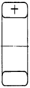
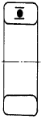
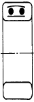
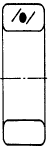
(정답률: 23%)
63. 기하공차의 기호 중 원통도를 나타내는 기호는?
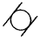
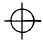
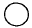
(정답률: 56%)
64. 다음 식으로 표현된 도형의 결과를 무엇이라고 하는가?(단, r : xc와 yc 에서 떨어진 직선거리, 2π )
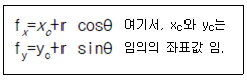
- 타원
- 포물선
- 쌍곡선
- 원
(정답률: 36%)
65. 다음 중 좌표계에 관한 설명으로 잘못된 것은?
- 실세계에서 모든 점들은 3차원 좌표계로 표현된다.
- x, y, z축의 방향에 따라 오른손좌표계와 왼손좌표계가 있다.
- 모델링에서는 직교좌표계가 사용되지만, 원통좌표계나 구형좌표계가 사용되기도 한다.
- 좌표계의 변환에는 행렬 계산의 편리성으로 동차좌표계 대신 직교좌표계가 주로 사용된다.
(정답률: 27%)
66. 도면의 척도가 1 : 2 로 주어졌다. 도면의 투상도를 재어보니 50mm일 때, 실제 대상물의 길이는 몇 mm 인가?
- 10
- 20
- 50
- 100
(정답률: 55%)
67. 그림과 같이 둥근봉을 R가공 하였다. 화살표 방향에서 본 그림으로 적합한 것은?
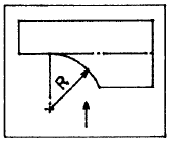
(정답률: 57%)
68. 가공에 의한 커터의 줄무늬가 여러 방향으로 교차 또는 무방향을 나타낸 것은?
- C
- X
- M
- =
(정답률: 57%)
69. 다음 투상의 평면도에 해당하는 것은?
(정답률: 70%)
70. 다음 중에서 디스플레이 장치의 소재로 사용되는 내용이 아닌 것은?
- DED(Digital Equipment Display)
- Plasma Display
- TFT-LCD(Thin Film Transistor-Liquid Crystal Display)
- CRT(Cathode Ray Tube) display
(정답률: 26%)
71. CAD로 작성된 도면에서 선의 종류는 가공자에게는 중요한 의미가 된다. 다음 선의 종류를 선택하는 방법 중 잘못된 방법은?
- 보이지 않는 부분의 모양은 숨은선으로 한다.
- 치수선은 가는 실선으로 한다.
- 절단면을 나타내는 절단선은 연속선으로 한다.
- 치수 보조선은 가는 실선으로 한다.
(정답률: 63%)
72. 다음 기능 중 변환 매트릭스를 사용했을 때의 편리함과 무관한 기능은?
- Zooming
- Rotation
- Mirror
- Copy
(정답률: 20%)
73. Boundary Representation 솔리드 데이터는 Geometry 데이터와 Topology 데이터로 구분해서 생각할 수 있다. 다음 용어 중 Topology 용어가 아닌 것은?
- Face
- Edge
- Loop
- Bridge
(정답률: 23%)
74. 바닥면이 없는 원추형 단면(conic section)에 의해 얻어질 수 없는 도형은?
- 타원(Ellipse)
- 쌍곡선(Hyperbola)
- 원호(Arc)
- 포물선(Parabola)
(정답률: 38%)
75. 도면에 3/8-16UNC-2A로 표시되어있다. 이에 대한 설명중 틀리는 것은?
- 3/8은 나사의 바깥지름을 표시하는 숫자이다.
- 16은 1인치 내의 나사 산의 수를 표시한 것이다.
- UNC는 유니파이 보통나사를 의미한다.
- 2A는 수량을 의미한다.
(정답률: 55%)
76. 그림에서 r o 가 평면상의 한 점이고 n 1 , n 2 가 평면상의 임의의 두 벡터라면 평면을 정의하는 매개변수식 r (u,v)는?
- r (u, v) = r o + n 1 + n 2
- r (u, v) = r o + un 1 + vn 2
- r (u, v) = r o + un 1 + n 2
- r (u, v) = r o + n 1 + vn 2
(정답률: 40%)
77. CAD 시스템 출력장치 중 각 화소에 부여된 어드레스에 의하여 출력하는 hard copy unit에 해당하지 않는 것은?
- dot matrix printer
- pen plotter
- electrostatic plotter
- laser printer
(정답률: 44%)
78. 2차원 변환 행렬이 다음과 같을 때 좌표변환 H는 무엇을 의미하는가?
- 확대
- 회전
- 이동
- 반전
(정답률: 41%)
79. 기어의 제도에서 축방향에서 본 이뿌리원을 그리는 선의 종류는?
- 가는 파선
- 가는 실선
- 가는 1점 쇄선
- 굵은 실선
(정답률: 41%)
80. 치수기입에 대한 설명 중 틀린 것은?
- 필요한 치수를 명료하게 도면에 기입한다.
- 잘 알 수 있도록 중복하여 기입한다.
- 가능한한 주요 투상도에 집중하여 기입한다.
- 가능한한 계산하여 구할 필요가 없도록 기입한다.
(정답률: 72%)
중간 지점에서의 등분포하중은 1 kN/m이고, 중간 지점에서의 집중하중은 4 kN이다. 따라서, 중간 지점에서의 전단력은 5 kN이다.
중간 지점에서의 굽힘 모멘트는 M = (1/2)×(1/2)×2×5×3 - 4×1 = 13 kNㆍm 이다.
따라서, 정답은 "13 kNㆍm"이다.